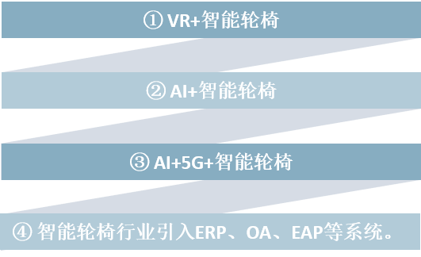

科技赋能VR、大数据，云计算、人工智能、5G等将逐步从1线城市过渡到2、3、4线城市，实现智能轮椅行业科技体验的普及化。
以上两点对于品牌效应不强的SWOCH智能轮椅而言 ，“90后”是个相对其他商品而言略显优势的消费群体。在人均可支配收入增加和居民医疗保健意识提高的背景下，如“90后”这样的个人消费者与消费群体将成为康复机器人的市场爆发点。
VR+智能轮椅
情景互动轮椅控制训练系统的操作真实模拟轮椅的操作情形，在训练中的操作方法与真实的轮椅操作一致。以使用者坐于轮椅上的方向为准，使用者前方为前，双手操作乘坐的轮椅，系统中虚拟的轮椅就会作出相应动作。操作示例：全仿真操作：双独立可调线性磁阻力系统 ，双模式四方向感测与速度侦测控制 。逼真体验感：除前进与后退外，还实现了逼真的转向和坡道斜度仿真功能
AI+智能轮椅
轮椅可以在使用过程边用边学---它学习的对象与内容是使用者及其偏好 。它能够实现“文本到语音功能”、“对象和空间识别”，或“部分失明的增强现实”。研究人人员表示：“这些智能轮椅能够利用人工智能来了解用户的运动偏好、驾驶风格和目前的生理状况。
AI+5G+智能轮椅
5G能够帮助人工智能理解语境，提高其学习能力。如果以人工智能无法准确分辨语境，就可能会在语音识别中曲解视障者的口令，从而造成不必要的麻烦。此外，AI产品在为残障人士增强现实体验时要依赖大量数据，要做到真正身临其境几乎不能有数据传输延迟，因此需要5G网络提供在数据传输上的高速和稳定。人工智能在助残服务上的应用也扩展到会手语的机械手臂，AI仿生假肢等等。其智能的本质让残障人士跨越了现实的障碍 ，而当人工智能和5G相结合，凭借两者的强大功能，助残设备或者APP所提供的服务也会变得更加智能和高效。
智能轮椅行业引入ERP、OA、EAP等应用
ERP企业资源计划、OA办公自动化可以优化信息化管理施工环节，提高了行业效率。EAP员工帮助计划 ，员工帮助计划又称员工心理援助项目、全员心理管理技术。它是由企业为员工设置的一套系统的、长期的福利与支持项目。通过专业人员对组织的诊断、建议和对员工及其直系亲属提供专业指导、培训和咨询，旨在帮助解决员工及其家庭成员的各种心理和行为问题，提高员工在企业中的工作绩效。将智能轮椅引入员工帮助计划，有利于提高员工的归属感、信任感。